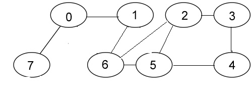

<!DOCTYPE html>
<html lang="en">
  <head>
    <meta charset="utf-8">
    <title>Programming Made Fun</title>
   
<meta name="viewport" content="width=device-width, initial-scale=1.0">
<!-- Bootstrap -->
<link href="css/bootstrap.min.css" rel="stylesheet" media="screen">
<link href="css/bootstrap-responsive.min.css" rel="stylesheet" media="screen">
  </head>

  <body>
<div class="container-fluid">
<div class="row-fluid">
  <div class="span4 offset4" >
<div class="page-header">
  <h2>Programming Made Fun</h1>
</div>
    </div>
  <div class="span8 offset2">
    <div class="row-fluid">
    <div class="navbar navbar-inverse">
    <div class="navbar-inner">
    <a href="index.html"></a>
    <ul class="nav">
    <li><a href="file:///F|/sites/portal/index.html">Trees</a></li>
   <li><a href="file:///F|/sites/portal/graph.html">Graphs</a></li>
    <li>
      <a href="file:///F|/sites/portal/sorting.html">Sorting</a></li>

    </ul>
    </div>
    </div>
     <div class="tabbable tabs-left">
  <div class="tab-content">
    <div class="tab-pane active" id="tab2">
      
     <h3>Breadth First Traversal of a graph</h3>
        <hr></hr><div class="well">
      <pre class="brush: cpp;title: ; notranslate" title="">
<h4>Algorithm</h4>This is a very different approach for traversing the graph nodes. The aim of BFS algorithm is to traverse the 
graph as close as possible to the root node. Queue is used in the implementation of the breadth first search. 
Let’s see how BFS traversal works with respect to the following graph:

If we do the breadth first traversal of the above graph and print the visited node as the output, it will print the following output(starting from node 0)
0 7 1 6 2 5 3 4 .
  
procedure BFS(Graph,source):
2      create a queue Q
3      enqueue source onto Q
4      mark source
5      while Q is not empty:
6          dequeue an item from Q into v
7          for each edge e incident on v in Graph:
8              let w be the other end of e
9              if w is not marked:
10                 mark w
11                 enqueue w onto Q
 </pre>
       </div>
       <div class="well"> 
      <pre class="brush: cpp;title: ; notranslate" title="">
<h4>Source Code</h4>#include&lt;iostream&gt;
#include&lt;queue&gt;
using namespace std;
int n=4;
int count=1;

struct node
{
    int value;
    node *next;
};

void bfs(node arr[],int src);
void addedge(node arr[],int src,int des);
void printlist(node arr[]);

int main()
{
    node arr[n];
    for(int i=0;i&lt;n;i++)
    {
        arr[i].value=i;
        arr[i].next=NULL;
    }
    addedge(arr,0,1);
    addedge(arr,0,2);
    addedge(arr,1,3);
    addedge(arr,1,0);
    addedge(arr,2,0);
    addedge(arr,3,1);
    //addedge(arr,2,1);
    printlist(arr);
    bfs(arr,0);
    return(0);
}

void addedge(node arr[],int src,int des)
{
    node *ptr1=new node();
    ptr1->value=des;
    node *head=arr[src].next;
    arr[src].next=ptr1;
    ptr1->next=head;

}

void printlist(node arr[])
{

    for(int i=0;i&lt;n;i++)
    {
        cout<&lt;arr[i].value;
        node *ptr=arr[i].next;
        while(ptr!=NULL)
        {
            cout<&lt;"->"<&lt;ptr->value;
            ptr=ptr->next;
        }
        cout<&lt;endl;

    }
}

void bfs(node arr[],int src)
{
    queue<int> q;
    //int count=1;
    int visited[n];
    for(int i=0;i&lt;n;i++)
    {
        visited[i]=0;
    }
    q.push(src);
    visited[src]=1;
    int bfsorder[n];
    bfsorder[0]=src;
    int i=1;
    while(q.empty()==false)
    {
        int v=q.front();
        cout<&lt;"v is "&lt;<v<<endl;
        q.pop();
        //push all neighbours of v into the stack
        node *ptr=arr[v].next;
        while(ptr!=NULL)
        {
            if(visited[ptr->value]!=1)
            {
            bfsorder[i]=ptr->value;
            //cout<&lt;"node is "<&lt;ptr->value<&lt;"bfs no is "<&lt;count<&lt;endl;
            q.push(ptr->value);
            visited[q.back()]=1;
            i++;
            }
            ptr=ptr->next;
        }

    }
    cout<&lt;"the source vertex is "<&lt;arr[src].value<&lt;endl<&lt;"the bfs order is"<&lt;endl;
    for(int i=0;i&lt;n;i++)
    {
        cout<&lt;bfsorder[i]<&lt;" ";
    }
}
</pre>


    </div>
    
  </div>
    </div>
  </div>
</div>

<script src="js/jquery.js"></script>
<script src="js/bootstrap.min.js"></script>


  </body>
</html>
